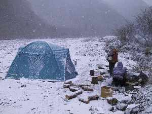

冬キャンプ | ２００１年 １月１３−１４日 |
 | 梅ヶ島は静岡市の北に位置し、標高も高く夏の避暑地としても有名です。夏でも涼しいこの地で、今シーズン２回目の冬キャンプを友達と行いました。 テントはもちろん夏用。シュラフは、私はそれなりの仕様のヤツを持っていったが、そのほかの友達は夏用、もしくは３シーズンであった。 こんなバカな事をやるのは、我々しかいないだろうと思い実行したのだが、現地に着くなり耳が突き刺すように寒いのを感じた。ココで一晩いると死ぬかも。と、思いながらもテントを張り、夕食の準備を始めた。 （ちなみに夕食は、無水カレーとチキンの照り焼き、鍋、そして酒！） |
夜８時ぐらいになると気温が、−９℃まで下がっていた。たき火をガンガン焚いて寒さをしのぐが、たき火から離れると凍えるように寒い。実際、ポリタンクの水が凍り始めていた。日本酒やウイスキーで体を内側から温めていた。 夜１２時に私はシュラフに身を潜らせた。先に述べたように、私のシュラフはそれなりのヤツなので寒くなく、気持ちよく熟睡しました。しかし、３シーズンの友達はかなり寒かったようです。 朝、目が覚めるとさらさらと音が聞こえ、テントの表面をはうように何かが滑っているのが分かる。 外に出ると一面真っ白で、まだ、雪は降り続いていた。他の連中はまだ寝ている。たき火の跡がまだ、くすぶっていたので、新聞紙と薪をくべてやり、しばらくすると火が起こった。 薪が丸太のようなヤツばかりだったので、朝から薪割を始める。 |  |
 | 朝食に昨日の鍋の残りを温めて食べる。温かいモノが旨い。ついでに焚き火で焼き芋をやる。これがほくほくして旨い。中まで金色に輝いているような焼き芋で、何もつけなくても（焼き芋だから当然だが）甘くて旨い。 雪は時折強く降り、頭の上に降り積もっていく。こんなキャンプも体験してみてはいかがですか？ |